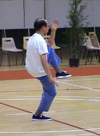
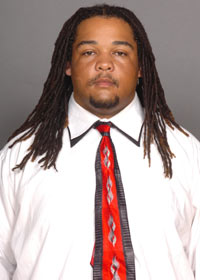
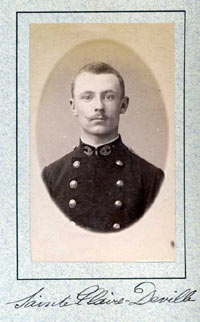
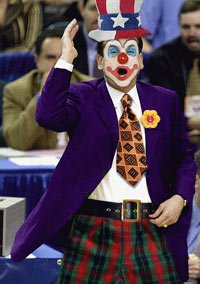
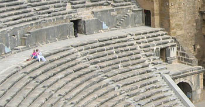
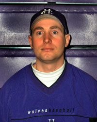
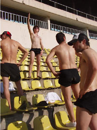
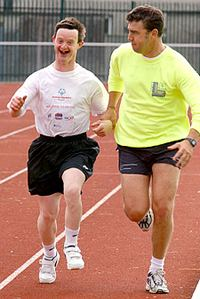

Команды ← FC MEKAY
31 января 2005 года был создан футбольный клуб, получивший неоднозначное название "МЕКАЙ" (ударение на первый слог). Итого, через полгода мы будем с водовкой и вескариком праздновать 2-летие нашего клуба.
Команда попала в 5 лигу и уже 6-ой сезон прочно закрепилась в ней. Правда лучшим достижением было лишь 4-ое место в турнире. В кубке страны команда добиралась до 4-го этапа. Но это всё хуйня, и мы не ссым по этому поводу, ведь знаем, что всё впереди. Команда до сих пор находится на стадии формирования, поиска хороших исполнителей, задрайкой дыр в составе и т.д. Были хорошие матчи, были хуёвые, были средние, были провальные. Но мы не ссым и не падаем духом.
К этому времени в клубе сложились уже легендарные игроки, такие как Chan Chin-Mong (ЧиЧиМонь) и Wojciech Brodnicki (Войцех Броднички). Были и такие герои как Гонерт Трушелис, который уже чешет яйца на пенсии перед телевизором. Но, как мы знаем, время не стоит на месте, время идёт, и мы не собираемся держать в команде инвалидов и стариков лишь потому, что они когда-то что-то сделали для клуба.
Команда имеет способных спонсоров, пиздатый тренерский штаб, поэтому мы идём вперёд. И жди нас Еврокубки блять!

Chan Chin Mong настраивается на матч.

Главный врач клуба - негр.

Легенда ФК МЕКАЙ - Гонерт Трушелис.

Главный тренер Jean Despres во время очень важного матча.

Стадион команды Мекай - Петровский.

Молодой вратарь - Yakiv Konoplyanenko

Болельщики.

Крайний полузащитник - Eddy Ionico с тренером во время тренировки.

Болельщица
(по совместительству массажист и пизда).